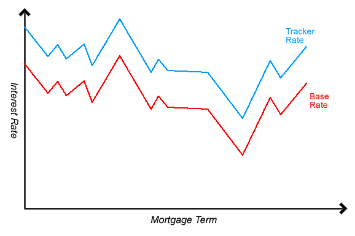

What is a tracker mortgage?
A tracker mortgage is a mortgage where the interest rate is variable and changes constantly as it tracks another interest rate, usually the Bank of England Base Rate. The interest rate you pay is a combination of the tracker deal rate advertised by the lender plus the base rate. So if the tracker deal offers 0.5% interest and the base rate is 2.5%, you will pay 3% interest in total on your mortgage. Tracker mortgages can last for as little as one year or you can have a lifetime tracker mortgage to last the entire length of the mortgage period.
The idea of the tracker mortgage is that if Bank of England’s rate goes down, you will benefit and pay less interest on your mortgage. However, if the Bank of England’s rate goes up, then you will have to pay more interest. The graph below shows how the tracker rate follows the base rate.
Source: Moneyfacts
When you sign up for a tracker mortgage, you are given a very low ‘introductory rate’ and when this period ends, you are allocated the standard variable rate (SVR) which his the default rate the lender charges for all variable rate mortgages.
Tracker mortgage advantages
Tracker mortgages are extremely popular and there are several advantages for selecting this type of mortgage. Borrowers will be able to make the most of lower interest rates that become available by tracking the Bank of England rate. This will lead to a saving on the monthly interest they pay for their mortgage until the interest rate goes back up. Homeowners with a fixed mortgage rate are unable to enjoy the same rates.
A further advantage is when setting up your tracker mortgage, the arrangement fee you are forced to pay will be typically be lower than what customers pay for a fixed mortgage. In addition, when you sign up, the introductory rate you are given is usually the lowest interest rate you can get for any type of mortgage.
Most tracker mortgages allow you to overpay up to 10% of your mortgage balance per year without an early repayment charge (EPC). Mortgage lenders will charge around 2% for early repayments so by avoiding this you can save a few hundred or thousand pounds. This aspect of the tracker mortgage is very helpful to individuals who feel comfortable with their finances or are expecting an injection of cash and can therefore afford to overpay on their mortgage repayments.
An additional benefit is that some mortgage lenders offer a ‘Droplock feature.’ This means that if the tracker rate is causing your interest rate to go much higher than expected, the lender will allow you to switch to one of their fixed rate models. It is worth finding out if your mortgage lender offers this because it will allow you to minimize your interest repayments.
Tracker mortgage disadvantages
The main downside of a tracker mortgage is that the base rate can go up and therefore you will be forced to pay a higher monthly mortgage repayment than expected. For this reason, a tracker mortgage is not suitable for an individual who cannot handle an increase in their budget. For those looking for more stability in how much they pay each month, they may be better suited for a fixed rate product which is not subject to fluctuations. Also, once your introductory period ends, you will be placed on the standard variable rate, which can sometimes be much higher and lead to a huge increase in you repayments. A way to avoid this higher rate is to remortgage or arrange a new deal with your lender.
A further disadvantage is that sometimes you cannot take advantage of the lowest rates because the lender puts a ‘collar rate’ on it which caps the interest you are charged to a certain level. If you are looking to apply for a tracker mortgage, it is important to see if the provider has a collar rate or not.
Best tracker mortgages rates at Quiddi Compare
To receive a mortgage quote, simply fill in our form above and someone from the Quiddi team will get in touch with a personal offer based on your criteria. If it is specifically a tracker mortgage that you are interested in, we compare some of the top tracker mortgages in the UK and will be able to find you the best tracker mortgage deal based on your circumstances. Our service is completely free of charge and we will always help our customers find the lowest interest rate and best loan to value possible.
THINK CAREFULLY BEFORE SECURING OTHER DEBTS AGAINST YOUR HOME. YOUR HOME MAY BE REPOSSESSED IF YOU DO NOT KEEP UP REPAYMENTS ON YOUR MORTGAGE OR ANY OTHER DEBT SECURED ON IT.
Some partners may charge you a fee for helping you find a Mortgage or Secured Loan or other services they provide. MAKE SURE you check with the company before agreeing to any service if they charge you a fee and what the terms are.
Warning: Late repayment can cause you serious money problems. For help, go to moneyadviceservice.org.uk
QuiddiCompare does not charge a fee and does not provide any financial advice relating to mortgages. However we may on occasion receive commissions from IFA’s and mortgage providers, brokers and intermediaries for introducing you to them.
The content of this site is meant to be informational, and it should not be considered financial advice. - See more at: quiddicompare.co.uk/mortgages